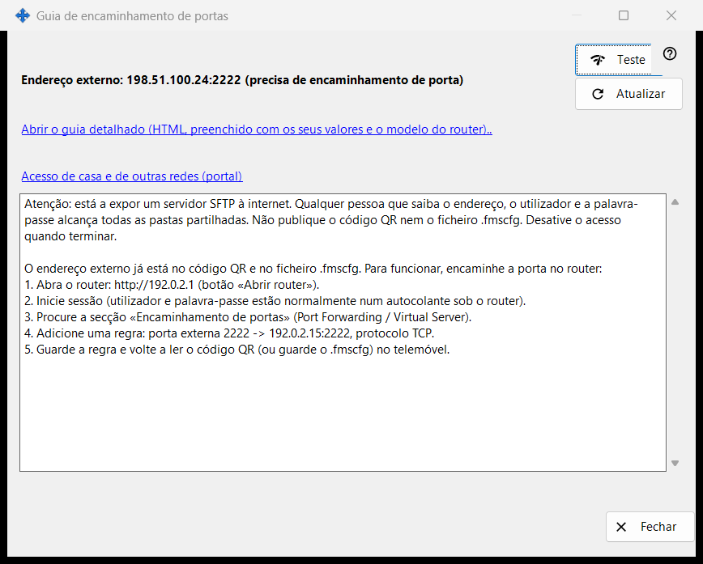
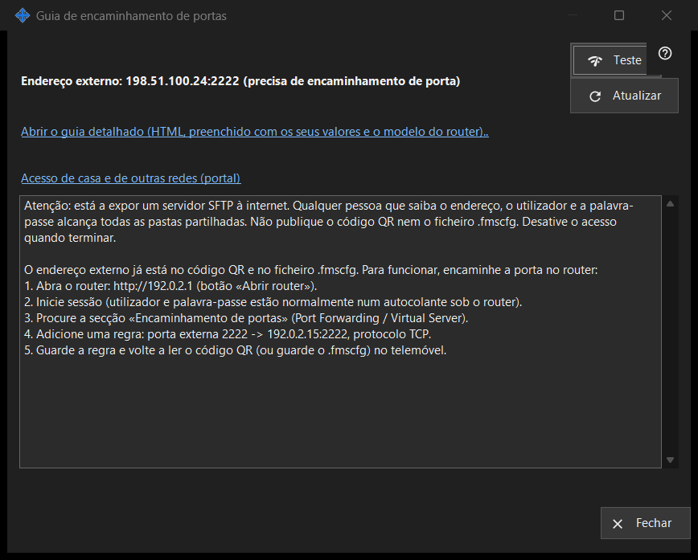

Guia de encaminhamento de portas
Finalidade
Ajuda a tornar a partilha acessível a partir de fora da sua rede doméstica. Mostra o endereço externo e se a porta foi aberta automaticamente ou se precisa de encaminhamento no router, e oferece um teste e um guia detalhado. Abre-se a partir do botão «Como configurar o acesso pela internet» da janela principal.


Nesta ordem
- Inicie primeiro a partilha; caso contrário, a janela pede-lho.
- Leia as linhas de estado: acessível, atrás de CGNAT ou precisa de encaminhamento de portas.
- Se for preciso encaminhamento, abra o guia detalhado e crie a regra no router.
- Prima «Teste» para sondar o endereço a partir deste PC.
- Confirme a partir do telemóvel com dados móveis e o Wi-Fi desligado.
Os elementos
Estado
A janela deteta o endereço externo e indica uma das seguintes mensagens: «Alcançável pela internet», «Endereço externo: .. (precisa de encaminhamento de porta)», «Endereço externo desconhecido - consulte o router.» ou «Atrás de CGNAT - não alcançável do exterior.». Quando a porta foi aberta automaticamente (UPnP), não é preciso configurar o router, mas só o telemóvel com dados móveis pode confirmar que funciona. «Atualizar» repete a deteção.
Router e guias
A linha do router mostra o seu endereço, ou «A detetar o router..» enquanto é procurado. A ligação «Abrir o guia detalhado (HTML, preenchido com os seus valores e o modelo do router)..» abre um guia HTML local; se não for possível abri-lo, a janela indica-o. A ligação «Acesso de casa e de outras redes (portal)» abre no navegador a página correspondente do portal de ajuda.
Teste
Sonda o endereço externo a partir deste PC e comunica «Servidor SFTP alcançável», «Porta aberta, mas sem resposta SFTP», uma ligação fechada (possivelmente o limite de ligações) ou nenhuma resposta. Não é conclusivo: muitos routers recusam, a partir de dentro, um pedido ao seu próprio endereço externo, pelo que a verificação fiável é o telemóvel com dados móveis.
Segurança
Abrir o SFTP à internet entrega todas as pastas partilhadas a quem souber o endereço, o utilizador e a palavra-passe. Não publique o código QR nem o ficheiro .fmscfg e desative a partilha quando terminar. «Fechar» sai da janela.
Definições do gestor · Definições de partilha SFTP · Definições do servidor de troca